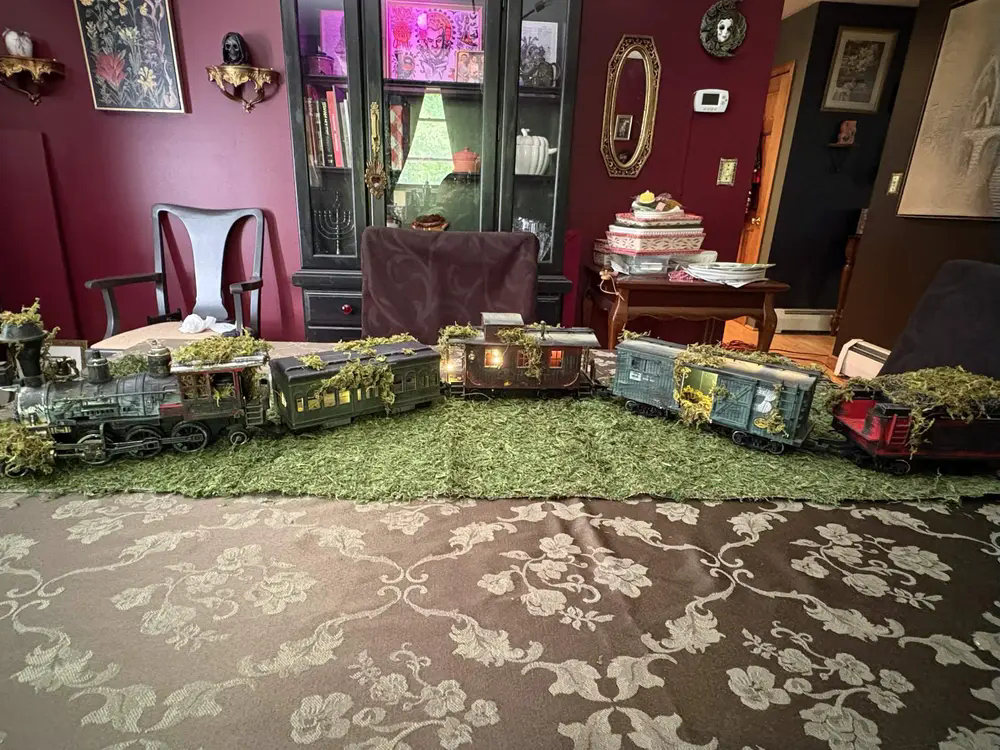

Campaign archive
Past adventures, preserved.
Explore the range of stories and game systems that local Game Masters have brought to the table, from short mysteries to long-running campaigns.
The stories behind the tables
Campaign archive
Search by title, system, Game Master, or year. Entries based only on surviving channel names are labeled carefully instead of filling gaps with guesses.

Loading past adventures…
What comes next
Looking for a game you can join now?
The archive shows what local Game Masters have run before. Current listings show what is recruiting or already underway today.